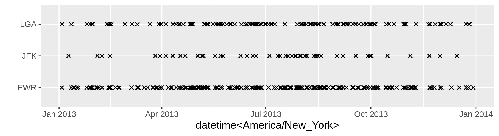
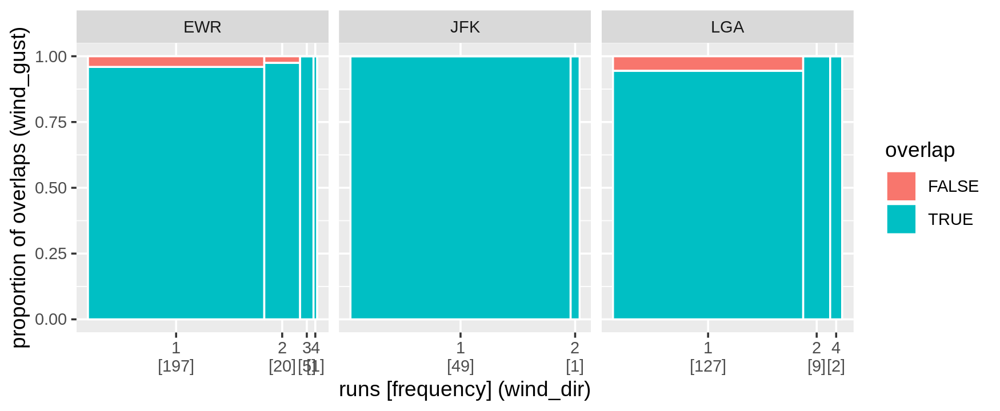

The mists package provides a suite of 1d, 2d, and visual tools for exploring and polishing missing values residing in temporal data. The primary focus of the package is to look at the runs of NA and the association with other variables, and to formulate missing data polishing strategies.
Installation
Install the development version from GitHub with:
Get started with na_rle() and list_of_na_rle()
The na_rle() gives a sparse representation for indexing runs of missings, a special type of run length encoding (rle).
library(mists)
(x <- na_rle(c(1, NA, NA, 4:7, NA, NA, 10:15, NA)))
#> <Run Length Encoding <NA>[3]>
#> $lengths: <int> 2 2 1
#> $indices: <int> 2 8 16
(y <- na_rle(c(10, NA, NA, NA, 6:3, NA, 1)))
#> <Run Length Encoding <NA>[2]>
#> $lengths: <int> 3 1
#> $indices: <int> 2 9It returns a named list of lengths and indices (the starting indices) of NA runs. Set operations can be applied: intersect(x, y), union(x, y), and setdiff(x, y), along with other math operations.
The list_of_na_rle() makes it easier to work with tibbles.
library(dplyr)
na_runs_wind <- nycflights13::weather %>%
group_by(origin) %>%
summarise_at(
vars(contains("wind")),
~ list_of_na_rle(., index_by = time_hour)
)
na_runs_wind
#> # A tibble: 3 x 4
#> origin wind_dir wind_speed wind_gust
#> <chr> <list<rle<NA>>> <list<rle<NA>>> <list<rle<NA>>>
#> 1 EWR [223] [1] [644]
#> 2 JFK [50] [3] [519]
#> 3 LGA [138] [0] [670]Range plots and extended spinoplots
How do those missings distribute and associate with others? The range plot below shows many of single NA runs occurs to wind_dir in 2013.

The spinoplot has been extended to examine the association of missing runs with a second variable through temporal overlapping. A large amount of missings in wind_dir intersects with wind_gust missings at all three places.

Missing data polishing
Too many missings spread across variables and observations like the wdi dataset (world development indicators)? Every observation and measured variable contains NA, and almost half of the data goes missing. We would end up with no data if using listwise deletion.
#> # A tibble: 1 x 5
#> prop_overall_na prop_cols_na prop_rows_na data_ncols data_nrows
#> <dbl> <dbl> <dbl> <int> <int>
#> 1 0.449 1 1 57 10850Polishing columns and rows iteratively sweeps out chunks of NA but leaves some of them in. The index should be kept intact by slicing the ends only due to the temporal ordering. The na_polish_auto() automates this polishing process by minimising the loss, defined as the proportion of overall missings weighted by the proportion of removed observations. It will iterate the following passes: na_polish_measures(), na_polish_key(), na_polish_index() until a tolerance value (close or equal to zero). The na_polish_*() family expects a tsibble, because polishing starts with tidy and clean data.
wdi_ts <- wdi %>%
tsibble::as_tsibble(key = country_code, index = year)
wdi_after <- na_polish_auto(wdi_ts, cutoff = .8, quiet = TRUE)
na_polish_metrics(wdi_ts, wdi_after)
#> # A tibble: 1 x 6
#> prop_na nobs_na prop_removed nobs_removed nrows_removed ncols_removed
#> <dbl> <int> <dbl> <int> <int> <int>
#> 1 0.636 220533 0.581 346948 5752 6